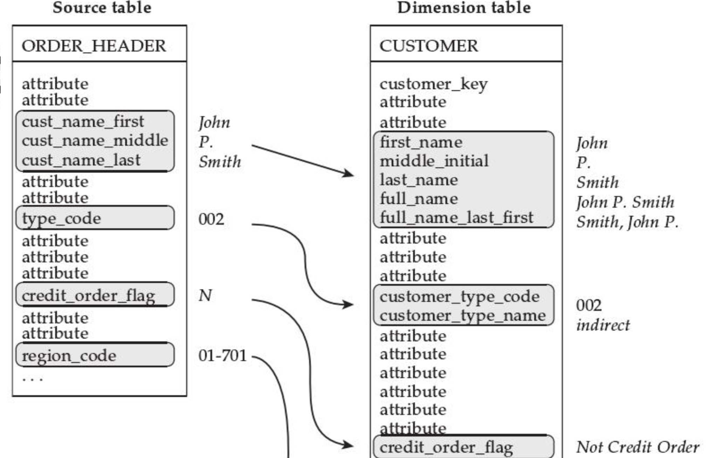

数据仓库
事实和纬度
如何发现事实和纬度？
- 通过语言描述分析来发现事实纬度
- 纬度关键词： 通过、根据、按照、在…时间，用于描述事情发生的环境、情况
事实:度量，发生了什么，通常在描述中表现为数值
例如：预定数为一万件。这个例子中，一万件为事实，其中的关键词为预定数。
- 通过报表发现事实与维度
- 维度：标签信息、过滤器、查询谓词、分组分类排序聚集控制量
- 事实：被汇总、聚集或者分类的数据
- 聚合纬度聚合维度，主要表现维度之间的关联关系，通过聚集到同一 个关联表中反应他们之间的自然聚类关系。
仓库模型
星型模型
- 事实存储在事实表中的列中
- 星型模型中事实表在中心，维度表在四周围绕展开
- 维度表维度表由维度组成，因维度表经常被简写成维度，为了区分，所以将维度表中的列称为维度属性
- 事实表
- 事实表中的外键通常用于区分事实表中的唯一行
- 事实表中行存储特定级别的细节事实
- 事实表中通过外键与维度表联系
- 细节的级别称为事实表的粒度
星型模型的应用：查询事实
- 星型模型可以通过对维度任意组合进行查询
- 回答问题的能力取决于事实存储的细节
- 代理键 SK Surrogate Key
- 在星型模式中，每个维度表都分配有一个代理键
- 该列是维度表的唯一标识符，是维度表的主键，并不来自于操作 型数据库系统，在 ETL 过程中创建
- 代理键没有业务含义，通常用整型表示
- 自然键 NK Nature Key
自然键来自于操作性数据库系统，不作为维度表行的唯一标识， 但在源系统中一般都是行的唯一标识
联想传统数据库的设计，代理键作为唯一标识符有什么好处?
- 允许数据仓库对源系统的变化做出响应，维护历史信息例如：比如学校
的学籍管理系统，包含一个学号为 20170001 的学生的记录，如果维度表中使用学号做主键，那么数仓中这条记录只能 保存一条，如果用代理键做主键，我们可以同一个学号保存多条记录
避免多列连接，查询优化。比如操作型系统合同管理系统中对合同的唯一性用合同类型和合同号表示，这样在维度表中就有两个主键，事实表中需要对这两个主键建立外键关系，加大了连接查询复杂性
维度集合越丰富，能回答的问题越详细，能分析的数据越有价值

维度表特性
- 行为维度基于事实计算的到的维度称为行为维度
- 组合维度
雪花模型
维度表中会存在大量冗余，可以将重复出现的属性，例如产 品维度中的品牌属性提取出来放在一张新的品牌表中，品牌表 与产品表通过外键关联， 品牌表在这里称为支架表，这种模式 就叫做雪花模式
事实表特性
退化维：不能将所有与业务相关的维度分类到一个紧凑的表集合中，当 将一个或多个维度存储到事实表时，这个存储到事实表中的维度被称为 退化维，简称退化列
缓慢变化维
- 维度表中的数据来源于操作型系统，进入到维度表中的信息，在 操作型系统中会发生更新和变化
维度表要怎么应对数据元素的改变?
应对数据元素改变存在不同的响应方式，主要有 2 种缓慢变化方式:
- 类型 1:重写事务历史
类型 2:保留变化情况
类型 1:当一个维度值的源发生变化，并且不需要在星型模型中保留变化 历史时，通常采用类型 1 来响应变化情况，仅仅使用变化的值来重写维度即可, 该技术通常用于更改错误
类型 2:维度表中包含重复的信息，给定的某以自然键在维度表中有多条记录，但不知道何时采 用那一种表示是正确的，解决办法用时间戳区分。
选择何种缓慢变换处理类型：在难以确定时，选择变化类型 2 最安全
事实表
将不同粒度的事实放在不同的事实表中
横向钻取
比较两个过程的适当方法是横向钻取
这一技术可应用于两个或两个以上的星型模式，跨多个数据 库，甚至跨越存储在不同厂商关系数据库系统中的数据，也可 以采用对星型模式查询多次的方法将横向钻去技术应用于星型 模式上，以便建立可用的对比报表
第一步:按照相同的细节层次从每个星型模式中汇总事实，主要从事实表中查询。 第二步:合并汇总的事实。